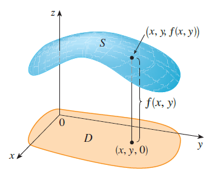

Definition If \(f\) is a function of two variables with domain \(D\), then the graph of \(f\) is the set of all points \((x, y, z)\) in \(\mathbb{R}^3\) such that \(z = f(x, y)\) and \((x, y) \in D\).

Sketch the graph of the function \(f(x, y) = 6 - 3x - 2y\).
Sketch the graph of the function \(f(x, y) = \sqrt{9 - x^2 - y^2}\).